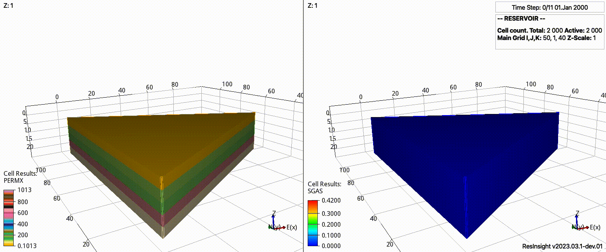

Introduction
{kind=link}
This documentation describes the content of the pyopmnearwell package. The numerical studies are performed using the Flow simulator.
Concept
Simplified and flexible testing framework for near-well simulations via a configuration file:
Set the physical model (current ones are co2store, co2eor, h2store, and saltprec).
Choose a specific template inside the folder for the chosen physical model.
Define the grid refinment in the x/y and z directions.
Define the number of different rocks along the z direction.
Define the number of layers (heterogeneity around the well) and its length.
Set the rock and fluid properties.
Define the injection schedule.
Run the simulations.
Inspect the results by looking at the generated figures.
Overview
The current implementation supports the following executable with the argument options:
pyopmnearwell -i input.txt -o output -p ecl -g all -z 10 -s log -m co2store
where
-i, -input: The base name of the configuration file (‘input.txt’ by default).
-o, -output: The base name of the output folder (‘output’ by default).
-p, -plotting: Using the ‘ecl’ or ‘opm’ Python package to generate the figures (‘ecl’ by default, ‘’ to skip the plotting).
-c, -compare: Compare the results from different output folders (write any name to actiate, ‘’ by default).
-g, -generate: Run the whole framework (‘all’), only run flow (‘flow’), or only create plots (‘plot’) (‘all’ by default).
-z, -zoom: xlim in meters for the zoomed in plots (20 by default).
-s, -scale: Scale for the x axis in the figures: ‘normal’ or ‘log’ (‘normal’ by default).
-m, -model: Simulated model (5th row in the configuration file). This is used for the plotting compare method (it gets overwritten by the configuration file) (‘co2store’ by default).
Installation
See the Github page.
Tip
Check the CI.yml file.
Note
For macOS users with the latest chips (M1/M2, guessing also M3?), the ecl and opm packages are not available via pip install. Then before installation, remove ecl and opm from the requierements.txt, then proceed with the Python requirements installation, and once inside the vpyopmnearwell Python environment, add the flag -DPYTHON_EXECUTABLE=/Users/dmar/pyopmnearwell/vpyopmnearwell/bin/python (by typing which python in the terminal you get your path) to the cmake (lines 27 in the bash scripts), build flow by running the bash script, and finally, add to the python path the folder where you have built it, e.g., by opening in an editor the vpyopmnearwell/bin/activate script, pasting the following line (edited with the path where you built opm with Python) export PYTHONPATH=$PYTHONPATH:/Users/dmar/pyopmnearwell/build/opm-common/build/python at the end of the script, and deactivating and activating the virtual environment.
Warning
The H2CH4 template in the h2store model folder is under development and it is based on an input deck available in opm-tests. In addition, the templates in the co2eor model are based on an input deck available in opm-publications. Currently the PVT tables in those examples are used, limiting the range of reservoir pressure and temperature, it is in the TODO list to extend this.